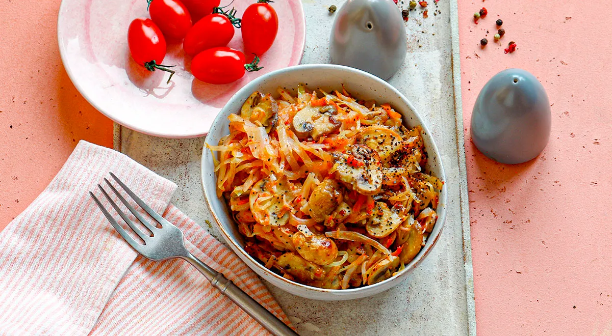

Постная солянка

Наша постная солянка — вовсе не суп, а прекрасное второе или
идеальный гарнир к курице или к мясу. Готовится блюдо просто,
быстро, из доступных продуктов. Одним из главных ингредиентов такой
солянки являются шампиньоны. Чем они свежее и крепче, тем лучше
будет текстура блюда. В его составе также есть консервированные
протертые томаты, однако летом их вполне можно заменить мелко
нарезанными хорошими грунтовыми помидорами, с кожицей или без. С
ними вкус постной солянки станет еще более насыщенным и ярким.